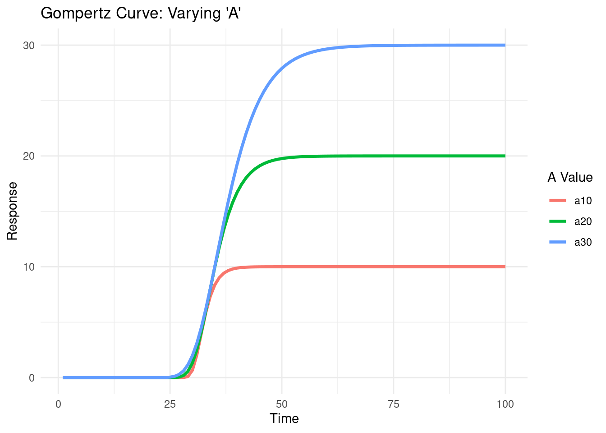
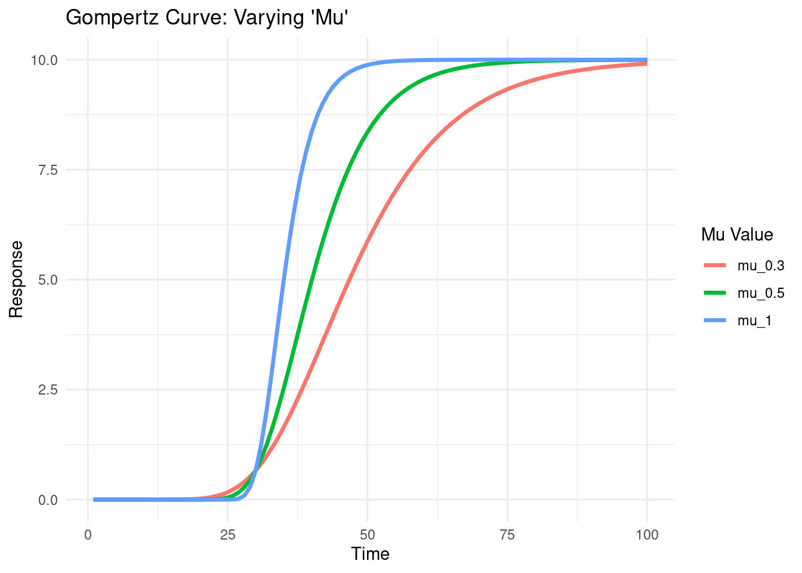
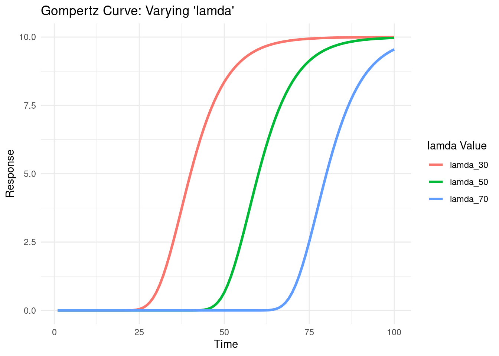
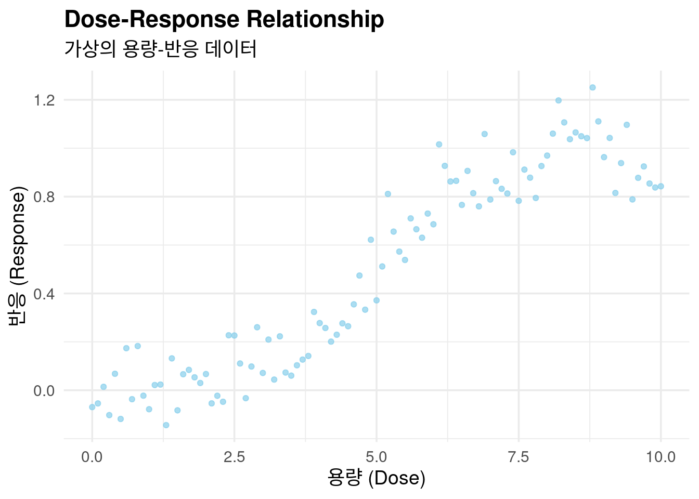
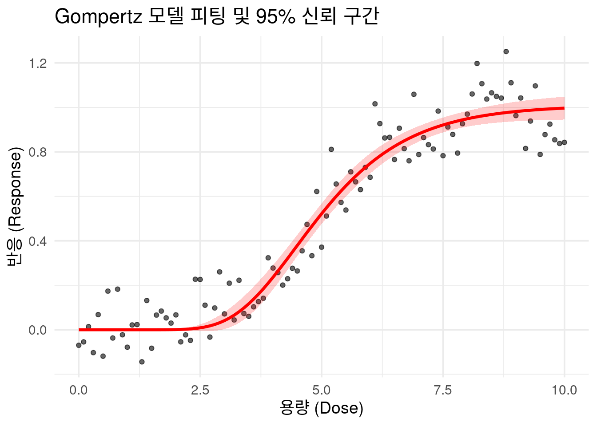
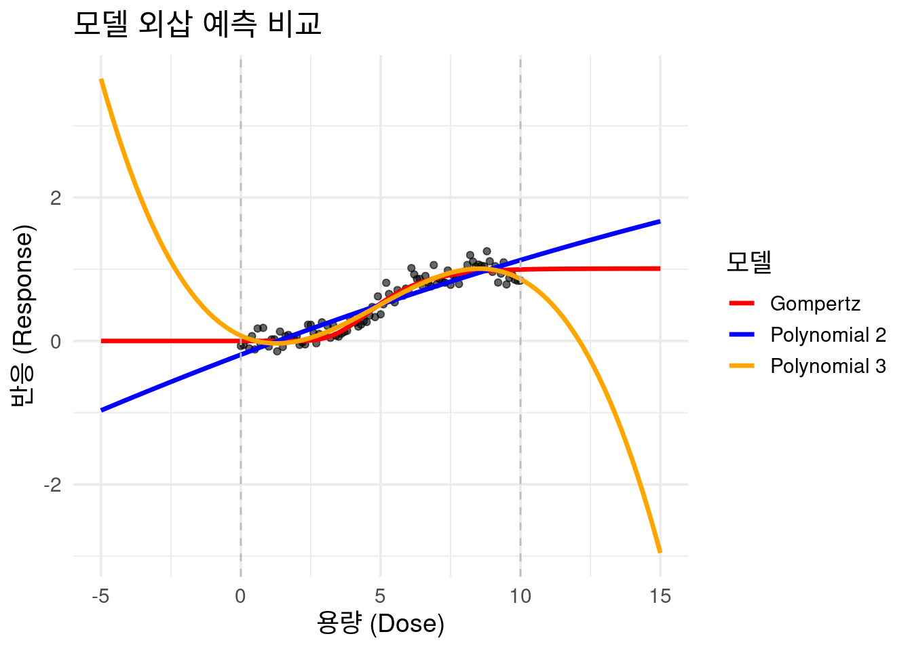

# 필요한 패키지 로드
if(!require("tidyverse")) install.packages("tidyverse");library(tidyverse)
if(!require("nls.multstart")) install.packages("nls.multstart");library(nls.multstart)
if(!require("investr")) install.packages("investr");library(investr)3 용량-반응 모델링 및 실습: Gompertz 모델
이 챕터에서는 비선형 모델인 고퍼츠(Gompertz) 곡선을 사용하여 용량-반응 관계를 분석하는 방법을 다룹니다. 우리는 ggplot2를 사용해 시각화를 하고, nls.multstart를 이용해 모델을 피팅하며, investr를 사용해 신뢰 구간을 계산할 것입니다.
3.1 Gompertz 모델의 이론적 배경
고퍼츠 곡선은 시간에 따른 성장 모델로 자주 사용되지만, 용량-반응 관계에서도 유용하게 활용될 수 있습니다. 이 곡선은 S자 형태를 가지며, 다음과 같은 세 가지 핵심 파라미터로 정의됩니다.
A: 곡선이 도달하는 최대값(asymptote)입니다. 이는 용량이 아무리 증가해도 반응이 더 이상 커지지 않고 수렴하는 지점입니다.
μ (Mu): 곡선의 기울기가 가장 가파른 지점에서의 최대 변화율(maximum slope)입니다. 이는 용량 변화에 따라 반응이 얼마나 빠르게 변하는지를 나타냅니다.
λ (Lambda): 반응이 시작되기 전 지연되는 구간(lag-phase)입니다. 즉, 반응이 의미 있는 수준으로 나타나기 시작하는 용량 지점입니다.
이 파라미터들이 어떻게 곡선 형태를 바꾸는지 시각적으로 확인해 봅시다.
# Gompertz 함수 정의
gompertz <- function(time, a, mu, lambda) {
a * exp(-exp(mu * exp(1) / a * (lambda - time) + 1))
}
# 파라미터별 Gompertz 곡선 시각화
# A 값 변화에 따른 곡선
tibble(time = 1:100) %>%
mutate(
a10 = gompertz(time, a = 10, mu = 2, lambda = 30),
a20 = gompertz(time, a = 20, mu = 2, lambda = 30),
a30 = gompertz(time, a = 30, mu = 2, lambda = 30)
) %>%
pivot_longer(
cols = starts_with("a"),
names_to = "parameter_a",
values_to = "response"
) %>%
ggplot(aes(x = time, y = response, color = parameter_a)) +
geom_line(size = 1.2) +
labs(
title = "Gompertz Curve: Varying 'A'",
x = "Time",
y = "Response",
color = "A Value"
) +
theme_minimal()
# 파라미터별 Gompertz 곡선 시각화
# Mu 값 변화에 따른 곡선
tibble(time = 1:100) %>%
mutate(
mu_1 = gompertz(time, a = 10, mu = 1, lambda = 30),
mu_0.5 = gompertz(time, a = 10, mu = 0.5, lambda = 30),
mu_0.3 = gompertz(time, a = 10, mu = 0.3, lambda = 30)
) %>%
pivot_longer(
cols = starts_with("m"),
names_to = "parameter_a",
values_to = "response"
) %>%
ggplot(aes(x = time, y = response, color = parameter_a)) +
geom_line(size = 1.2) +
labs(
title = "Gompertz Curve: Varying 'Mu'",
x = "Time",
y = "Response",
color = "Mu Value"
) +
theme_minimal()
# 파라미터별 Gompertz 곡선 시각화
# lamda 값 변화에 따른 곡선
tibble(time = 1:100) %>%
mutate(
lamda_30 = gompertz(time, a = 10, mu = 0.5, lambda = 30),
lamda_50 = gompertz(time, a = 10, mu = 0.5, lambda = 50),
lamda_70 = gompertz(time, a = 10, mu = 0.5, lambda = 70)
) %>%
pivot_longer(
cols = starts_with("l"),
names_to = "parameter_a",
values_to = "response"
) %>%
ggplot(aes(x = time, y = response, color = parameter_a)) +
geom_line(size = 1.2) +
labs(
title = "Gompertz Curve: Varying 'lamda'",
x = "Time",
y = "Response",
color = "lamda Value"
) +
theme_minimal()
3.1.0.1 데이터 생성 및 기초 시각화
이제 실제 연구와 유사한 가상의 용량-반응 데이터를 생성하고 tibble로 변환하여 ggplot2로 시각화해 봅시다. 이 과정은 데이터의 전반적인 패턴을 탐색하고, 어떤 모델을 적용해야 할지 가늠하는 데 필수적입니다.
# 데이터 생성
set.seed(0)
dose <- seq(0, 10, 0.1)
pb <- c(rnorm(50, 0, 0.001), rnorm(30, 0, 0.01), rnorm(10, 0.1, 0.05), rnorm(11, -0.1, 0.05))
resp <- 1 / (1 + exp(-(dose - 5))) + rnorm(length(dose), 0, 0.1) + pb
# tibble 생성 및 시각화
cohort <- tibble(dose, resp, pb)
ggplot(cohort, aes(x = dose, y = resp)) +
geom_point(color = "skyblue", alpha = 0.7) +
labs(
title = "Dose-Response Relationship",
subtitle = "가상의 용량-반응 데이터",
x = "용량 (Dose)",
y = "반응 (Response)"
) +
theme_minimal(base_size = 14) +
theme(plot.title = element_text(face = "bold"))
3.1.0.2 Gompertz 모델 피팅 및 신뢰 구간 시각화
nls() 함수는 비선형 모델을 피팅하는 데 사용되지만, 초기값에 매우 민감합니다. (2019년 강의록) 이러한 문제를 해결하기 위해, 우리는 여러 초기값을 자동으로 시도하는 nls.multstart() 함수를 사용하여 더 안정적으로 최적의 모델을 찾을 것입니다. 모델이 피팅되면, investr 패키지를 이용해 예측 곡선과 함께 95% 신뢰 구간(Confidence Interval)을 시각화할 수 있습니다.
# nls_multstart를 사용하여 고퍼츠 모델 피팅
nls_fit <- nls_multstart(
resp ~ gompertz(dose, a, mu, lambda),
data = cohort,
start_lower = c(a = 0, mu = 0, lambda = 0),
start_upper = c(a = 2, mu = 1, lambda = 10),
iter = 250
)Error in nlsModel(formula, mf, start, wts) :
singular gradient matrix at initial parameter estimates
Error in nlsModel(formula, mf, start, wts) :
singular gradient matrix at initial parameter estimates
Error in nlsModel(formula, mf, start, wts) :
singular gradient matrix at initial parameter estimates
Error in nlsModel(formula, mf, start, wts) :
singular gradient matrix at initial parameter estimates# 모델 결과 요약
print(summary(nls_fit))
Formula: resp ~ gompertz(dose, a, mu, lambda)
Parameters:
Estimate Std. Error t value Pr(>|t|)
a 1.00934 0.03107 32.48 <2e-16 ***
mu 0.29314 0.02754 10.64 <2e-16 ***
lambda 3.20596 0.15811 20.28 <2e-16 ***
---
Signif. codes: 0 '***' 0.001 '**' 0.01 '*' 0.05 '.' 0.1 ' ' 1
Residual standard error: 0.1106 on 98 degrees of freedom
Number of iterations to convergence: 23
Achieved convergence tolerance: 1.49e-08# 모델 피팅 결과 시각화
# 신뢰 구간 계산
cohort_ci <- investr::predFit(
nls_fit,
newdata = cohort,
interval = "confidence",
level = 0.95
) %>%
as_tibble() %>%
mutate(dose = cohort$dose)
ggplot(cohort, aes(x = dose, y = resp)) +
geom_point(alpha = 0.6) +
geom_line(data = cohort_ci, aes(y = fit), color = "red", size = 1.2) +
geom_ribbon(data = cohort_ci, aes(ymin = lwr, ymax = upr, y = fit), fill = "red", alpha = 0.2) +
labs(title = "Gompertz 모델 피팅 및 95% 신뢰 구간", x = "용량 (Dose)", y = "반응 (Response)") +
theme_minimal(base_size = 14)
3.1.0.3 실습 3: 모델 비교 및 외삽(Extrapolation) 논의
고퍼츠 모델 외에 다항식 모델을 피팅하여 두 모델의 적합도를 비교해봅시다. AIC(Akaike Information Criterion)는 모델의 복잡성과 적합도를 함께 고려하는 지표로, AIC 값이 낮을수록 더 좋은 모델로 평가됩니다. AIC를 통해 어떤 모델이 데이터에 가장 잘 맞는지 통계적으로 평가할 수 있습니다.
이 그래프를 보면, 모델의 외삽(Extrapolation) 결과가 어떻게 달라지는지 알 수 있습니다. 데이터가 없는 구간(dose -5 ~ 0 또는 10 ~ 15)에서 다항식 모델은 실제와 동떨어진 예측을 하는 반면, Gompertz 모델은 현실적인 포화 곡선을 유지합니다. 이는 모델 선택이 데이터 범위 밖의 위험을 평가하는 데 얼마나 중요한지를 시사합니다.
# 다항식 모델 피팅
poly2_fit <- glm(resp ~ poly(dose,2),data = cohort)
poly3_fit <- glm(resp ~ poly(dose,3),data = cohort)
# AIC를 이용한 모델 비교
AIC(nls_fit, poly2_fit, poly3_fit) df AIC
nls_fit 4 -153.22741
poly2_fit 4 -87.32223
poly3_fit 5 -154.38409# 모델 외삽(extrapolation) 결과 시각화
extrapolated_data <- tibble(dose = seq(-5, 15, length.out = 100))
extrapolated_data <- extrapolated_data %>%
mutate(
gompertz_pred = predict(nls_fit, newdata = .),
poly2_pred = predict(poly2_fit, newdata = .),
poly3_pred = predict(poly3_fit, newdata = .)
)
ggplot(cohort, aes(x = dose, y = resp)) +
geom_point(alpha = 0.6) +
geom_line(data = extrapolated_data, aes(y = gompertz_pred, color = "Gompertz"), size = 1.2) +
geom_line(data = extrapolated_data, aes(y = poly2_pred, color = "Polynomial 2"), size = 1.2) +
geom_line(data = extrapolated_data, aes(y = poly3_pred, color = "Polynomial 3"), size = 1.2) +
geom_vline(xintercept = range(cohort$dose), linetype = "dashed", color = "gray") +
scale_color_manual(values = c("Gompertz" = "red", "Polynomial 2" = "blue", "Polynomial 3" = "orange")) +
labs(title = "모델 외삽 예측 비교", x = "용량 (Dose)", y = "반응 (Response)", color = "모델") +
theme_minimal(base_size = 14)